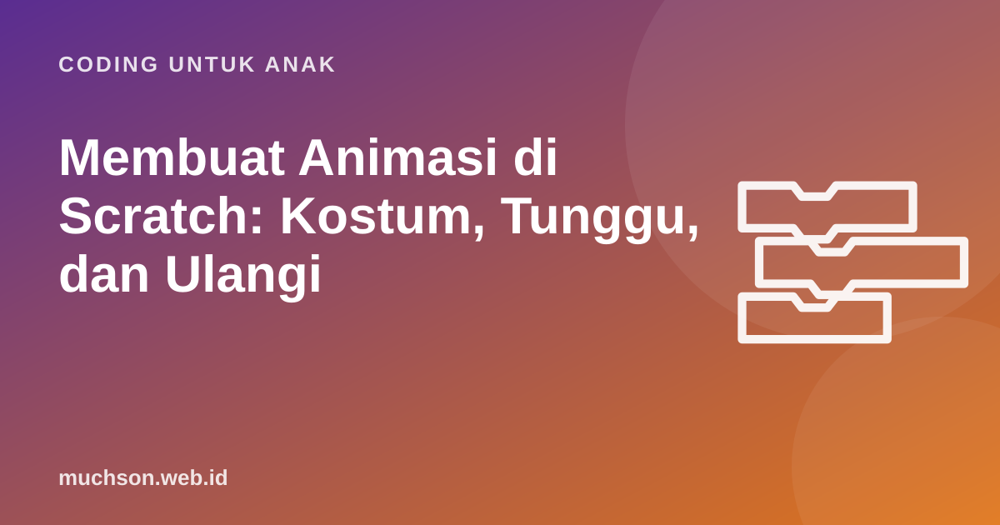

Beranda › Artikel › Coding untuk Anak
Coding untuk AnakMembuat Animasi di Scratch: Kostum, Tunggu, dan Ulangi
Animasi adalah pintu masuk coding yang paling ramah bagi anak yang suka menggambar dan bercerita. Rahasianya sederhana dan sama dengan film kartun: gambar yang sedikit berbeda ditampilkan bergantian dengan cepat. Artikel ini menjelaskan prinsipnya, blok yang dipakai, dan memandu anak membuat film pendek pertamanya.

Prinsip animasi: gambar berganti cepat
Film kartun klasik dibuat dari banyak gambar diam yang ditampilkan berurutan, biasanya belasan sampai dua puluhan gambar per detik. Mata dan otak kita menyambungkan gambar-gambar itu menjadi gerakan. Anak bisa membuktikannya sendiri dengan membuat buku flip: gambar orang lidi di pojok setiap halaman buku tulis dengan posisi kaki sedikit berbeda, lalu balik halamannya dengan cepat.
Di Scratch, setiap gambar itu disebut kostum. Sprite kucing bawaan punya dua kostum dengan posisi kaki berbeda. Berganti kostum sambil bergerak membuatnya tampak berjalan.
Blok-blok penting untuk animasi
| Blok | Kategori | Kegunaan dalam animasi |
|---|---|---|
| kostum berikutnya / ganti kostum ke | Tampilan | Berganti gambar untuk gerakan |
| tunggu ... detik | Kontrol | Mengatur kecepatan, memberi jeda antaradegan |
| meluncur ... detik ke x: y: | Gerakan | Bergerak halus ke titik tertentu |
| katakan ... selama ... detik | Tampilan | Dialog dengan balon kata |
| ubah ukuran sebesar | Tampilan | Efek mendekat atau menjauh |
| ubah efek [hantu / warna] sebesar | Tampilan | Muncul perlahan, menghilang, berubah warna |
| ganti latar ke | Tampilan (Panggung) | Pindah adegan |
Empat animasi dasar
1. Berjalan
2. Melayang dan berputar
3. Muncul perlahan (fade in)
4. Berbicara bergantian
Dialog antar dua tokoh butuh pengaturan waktu: tokoh B harus menunggu sampai tokoh A selesai bicara. Cara paling sederhana adalah memakai "tunggu" dengan durasi yang sama. Cara yang lebih rapi adalah memakai siarkan pesan, yang dibahas di artikel tentang cerita interaktif.
Membuat film pendek: mulai dari storyboard
Animator profesional di studio besar selalu membuat storyboard sebelum menganimasikan: deretan sketsa kasar setiap adegan. Untuk anak, storyboard mencegah proyek melebar tanpa arah dan melatih perencanaan.
Batasi film pertama 4 adegan dan maksimal 3 tokoh. Film pendek yang selesai jauh lebih membanggakan daripada film panjang yang tidak pernah rampung.
Mengatur pergantian adegan
Untuk setiap sprite, gunakan blok kejadian ketika latar berganti ke ... supaya tokoh muncul, bergerak, atau menghilang sesuai adegan. Dengan cara ini, Panggung menjadi "sutradara" dan sprite menjadi "pemain".
Masalah umum dan solusinya
Yang dipelajari anak lewat animasi
Di balik film pendek, anak melatih urutan (algoritma), pengulangan, pengaturan waktu, kejadian, dan perencanaan. Ia juga belajar bercerita: tokoh, masalah, dan penyelesaian. Bagi anak yang belum tertarik pada game, animasi sering menjadi jalan masuk terbaik ke coding. Jalur belajar yang menggabungkan keduanya, seperti di PixelKode, memberi anak kesempatan menemukan bentuk karya yang paling ia sukai.
Tanya jawab
Bagaimana cara membuat tokoh berjalan di Scratch?
Apakah anak bisa menggambar kostum sendiri?
Berapa lama membuat film pendek di Scratch?
Apa bedanya "gerak" dan "meluncur"?
Sumber dan bacaan lanjut
- Scratch untuk pendidik
- Scratch: buat proyek baru
- Brennan & Resnick (2012). Kerangka berpikir komputasional